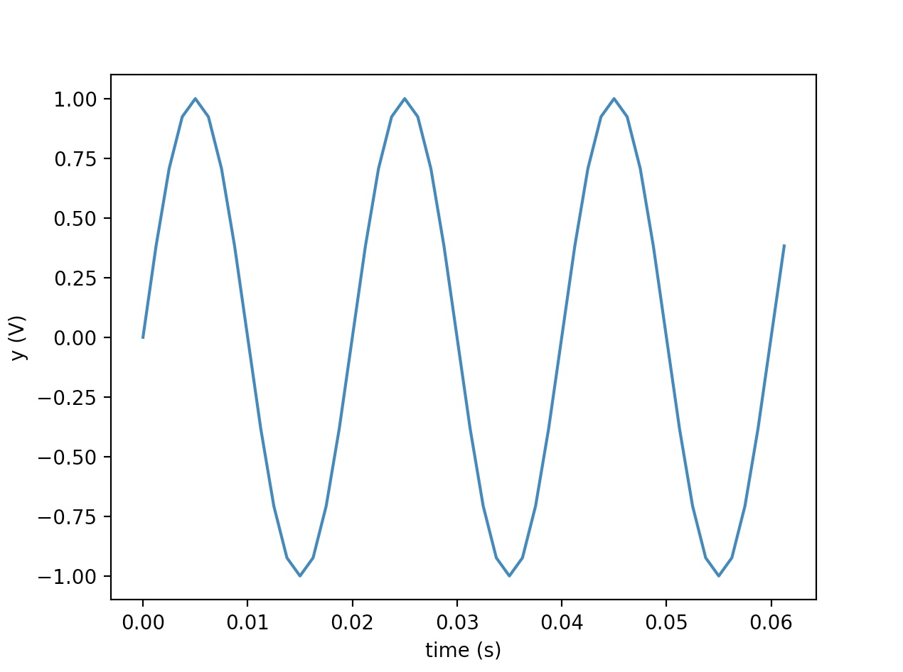
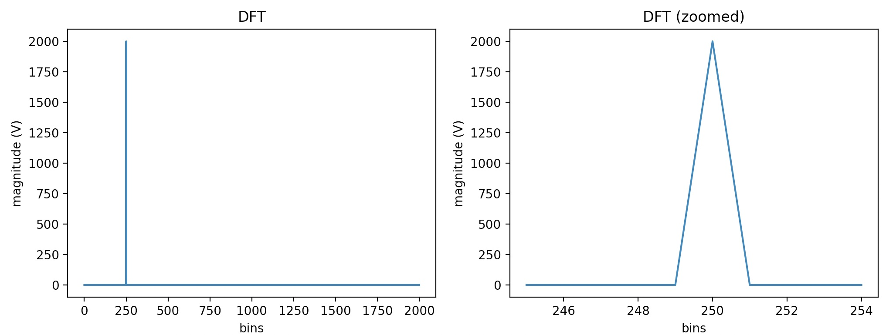
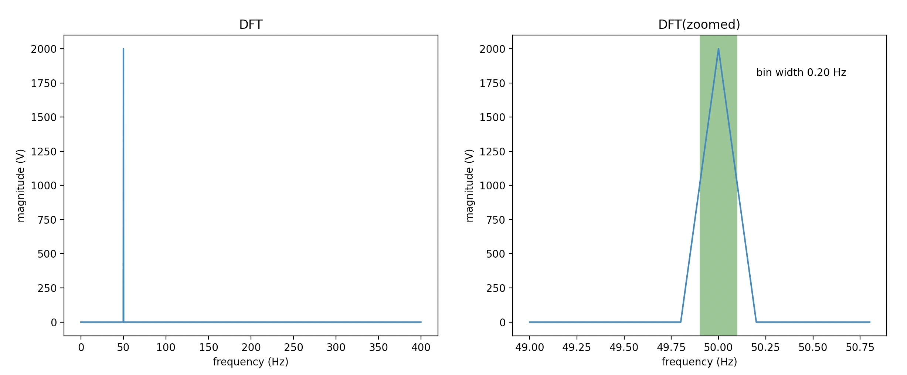
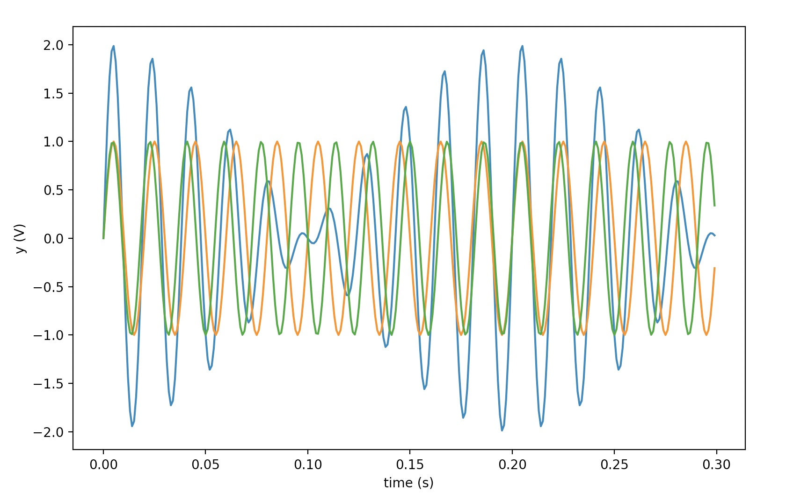
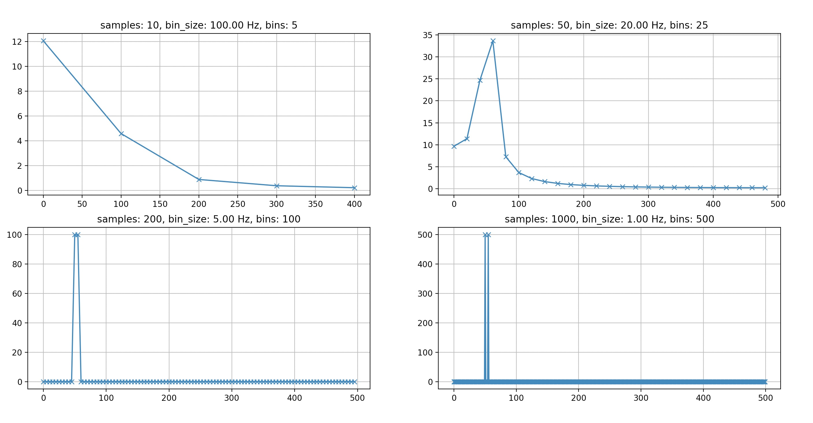

- Fri 04 July 2014
- Machine Learning
- #fourier transform, #fft, #dft
This post is an attempt to provide an intuitive approach in understanding DFT's temporal and frequency resolution characteristics. We will implement everything from scratch using python in order to conduct an as straightforward as possible analysis with minimal dependencies.
Discrete Fourier Transform (DFT)
The forward discrete fourier transform (DFT):
For the DFT calculation I will borrow the non optimized implementation from an other blog post.
1 2 3 4 5 6 7 8 9 | |
Signal Generation / Sampling
We need to define an example signal that will be used for the analysis. A sine voltage signal would be appropriate in our case.
Let's create and sample our sine wave. (\(A=1\), \(\phi=0\))
1 2 3 4 5 6 7 8 9 10 11 12 13 14 15 16 17 18 19 20 | |
The output of the above is
Signal Frequency: 50.0 Hz (Period: 20.0 ms)
Sampling Rate: 50.0 Hz, Duration: 5.0 s
Number of samples: 4000

DFT calculation
Let's calculate the DFT using the above signal as input.
1 2 3 4 5 6 7 8 9 10 11 12 13 14 15 16 17 18 19 20 | |
The output of the above is
DFT bins: 2000
Nyquist frequency: 400.0 Hz

The Nyquist frequency is equal to \(\frac{1}{2}\) of the sampling rate of a discrete signal processing system. Based on the fact that the Nyquist frequency is the maximum frequency we can have in our DFT spectrum we can calculate the DFT bin size as follows:
1 2 | |
DFT bin width: 0.2 Hz
We can now redraw the DFT spectrum using Hz as the x-axis unit this time.
1 2 3 4 5 6 7 8 9 10 11 12 13 14 | |

The peak in the DFT spectrum is, as expected, at:
1 | |
50.00 Hz
Based on the above:
where, if we consider \(f_s\) constant, we conclude that DFT bin width is inversely proportional to the number of samples we use to calculate the DFT.
Rephrasing, DFT frequency resolution is inversely proportional to the temporal resolution.
Of course, we should always not forget that by increasing the sampling rate we can get more samples in less time and consequently improve both our temporal and frequency resolution.
Example
To better understand our conclusion we will explore how temporal and frequency resolution relate to each other with an example. Let's define a signal similar to the one we initially defined but this time containing 2 sine waves with frequencies equal to 50 and 60 Hz.
1 2 3 4 5 6 7 8 9 10 11 12 13 14 15 16 17 18 19 20 21 22 23 | |
Sampling Rate: 1000.0 Hz, Duration: 5.0 s
Number of samples: 5000
Nyquist frequency: 500.0 Hz

Let's see how the number of samples (i.e. temporal resolution) affects the DFT bin size (i.e. frequency resolution) and when we have problems.
1 2 3 4 5 6 7 8 9 10 11 12 13 | |

We see that when the number of samples used to calculate the DFT (which is effectively the length of the analysis window) drops bellow 1000 we are unable to identify the two superimposed sine signals. Similarly, if we had a signal that changed rapidly over short periods of time, and we wanted to be able to track those changes in the time domain, then we would have to make sacrifices in our frequency domain resolution.
Conclusion
I hope the above analysis has helped you become a bit more familiar with the challenges we face when using this wonderful tool (i.e. the DFT). Hopefully, next time you'll have to decide about the size of your analysis window or the required sampling rate you will have the right arguments to support your decisions.